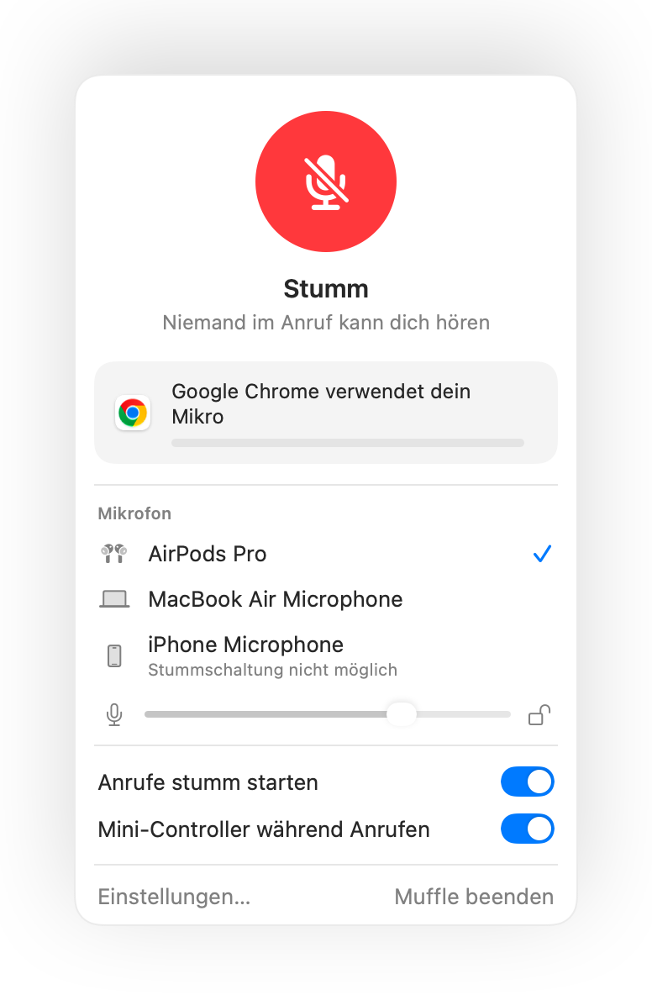

Push-to-Talk am Mac, in jeder App
Mit Push-to-Talk bleibst du stummgeschaltet, bis du eine Taste gedrückt hältst. Das ist ideal für große Meetings oder laute Umgebungen im Homeoffice, wird aber nur von wenigen Apps unterstützt und jede nutzt eine andere Taste.
Muffle rüstet Push-to-Talk für jede App auf deinem Mac nach. Bleib stumm, halte dein Tastenkürzel zum Sprechen gedrückt und lass einfach los, um wieder stumm zu sein.
Muffle 3 Tage kostenlos testenBald im Mac App Store erhältlich
So nutzt du Push-to-Talk
- Installiere Muffle.
- Schalte dein Mikrofon mit Control-Wahltaste-M oder über deine AirPods stumm.
- Halte Control-Wahltaste-M gedrückt, während du sprichst.
- Lass die Tasten los. Dein Mikrofon ist sofort wieder stummgeschaltet.

- Ein kurzes Antippen schaltet das Mikrofon um. Gedrückt halten aktiviert Push-to-Talk.
- Wähle in den Muffle-Einstellungen eine Taste, die für dich angenehm erreichbar ist, zum Beispiel eine F-Taste.
Häufige Fragen
Funktioniert Push-to-Talk auch in Google Meet?
Ja. Muffle schaltet das Mikrofon direkt auf Systemebene stumm. Push-to-Talk funktioniert deshalb in Meet, Zoom, Teams, Discord und jeder anderen App.
Gibt es auch Push-to-Mute?
Ja. Wenn dein Mikrofon aktiv ist, wirst du durch Gedrückthalten des Kürzels stummgeschaltet, bis du wieder loslässt.